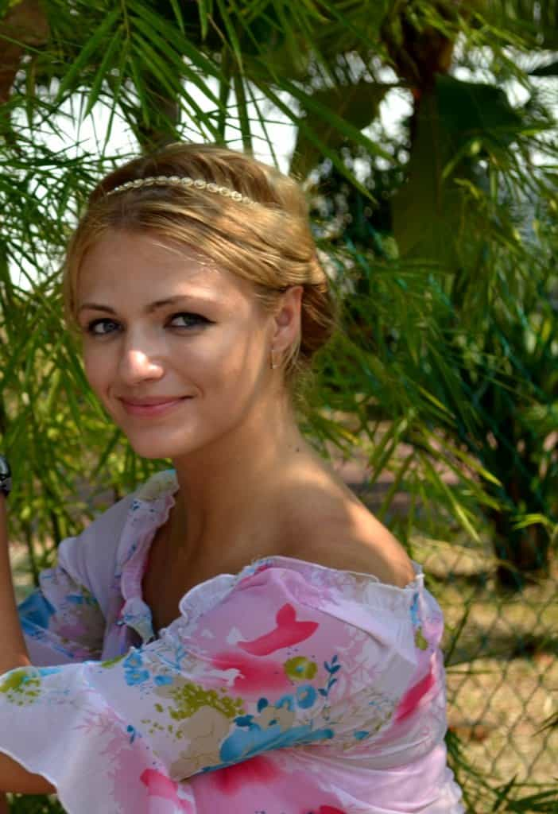

Kyle is an entrepreneur and nomad who has been living abroad since 2016. He blogs at This Is Trouble. Follow him on Facebook.


I recently relocated from Los Angeles, California to Poland. While I’ve spent time in both Eastern Europe and South America before, and noticed the cultural differences between North American women and EE or SA ones, my experience with the women here has continued to be mind-blowing.
Here are eight things that Eastern European girls have said to me, and what their American counterparts would likely have said in place of it. Keep in mind that these are close-to-exact quotes, so read past their charming English mistakes (it truly is cute).
These quotes came from three different girls, and are not in any particular order.
“Why are American girls masculine? Men and women are compatible. I think… man is the head of the relationship. The woman should be the neck. The neck supports the head. But… the head does much better with a neck. It cannot do without.”
An American girl would say: “I’m a strong and independent woman who has never needed a man and never will. In fact, men just get in the way of what I could accomplish. I am oppressed!”
Analysis: I’ve often used the term “polarity” to describe why men and women need each other, but this girl took made it an extremely teachable lesson. It does a better job of illustrating the lesson of “a building needs a foundation” by taking it to an extremely human level.
[When setting up a date] “Okay, Monday is good for you? I wrote you in my calendar. I can’t wait :)”
She also attached this picture:

An American girl would say: “Umm, so I’m pretty busy this week with my Feminist Dance Movement studies and my job at Starbucks, but MAYBE I can fit you in on Tuesday at 4pm. But I only have one hour. Then I have to get home and feed my four cats. I’ll let you know on Tuesday by 3pm.”
Analysis: I thought this was the sweetest thing in the world to send me that picture. I won’t lie, all girls have not been this easy to get out on a date. Many of them sing the same song about how busy they are with their lives. But many of the ones who have agreed to meet have said similar things about looking forward to it—they are showing eagerness and excitement to meet an interesting guy. American girls, on the other hand, would clam up and go silent.
“I only kiss men I have strong feelings for. How can an American girls have sex with 50+ men? She must be ruined, her face must have no light left.”
An American girl would say: “Well, I kissed five guys in a night once. I once had sex with seven guys in seven days. But those days are past now. I’ve had my fun and want to settle down with one special guy. By the way, what is your annual income?”
Analysis: I found it hilarious. The Ukrainian girl who said this described the 1,000 cock stare on an expert level. European girls recognize the value of their youth and beauty, and will not squander it away for some fleeting pleasure; I couldn’t even get this girl to kiss me despite 10+ attempts and a 3 hour+ date. They recognize that men like a chaste girl for long-term commitments.
Also—that American girl who had sex with seven guys in seven days? That was a true quote, it really happened to me. I was the seventh. She didn’t tell me until after the fact.
“Of course I cook. It is a woman’s responsibility.”
An American girl would say: “Of course I cook. But it’s not my job to cook for a man. What are my best recipes? Well, I make a mean box of Kraft Mac ‘n Cheese. I’m also quite talented with Lean Cuisines, and know the Domino’s delivery number by heart.”
Analysis: A Polish girl cooked me an egg soup on our third date—a recipe passed down from her grandmother. It was delicious. Later that week, she invited me over for cake and wine. She and her roommates made three different types of cake for my friend and me to sample.
Girls here take real pride in knowing domestic skills like cooking. The best thing in the world is when they shoo you out of the kitchen and tell you that is not a man’s place.
“I want kids, though I am not sure about right now. But I think it is a woman’s destiny to be a mother. To nurture. Sometimes I have very vivid dreams where I am pregnant. They are wonderful and beautiful.”
An American girl would say: “Eww, I never want kids. They’re so gross. The days of women being nothing but child-bearers is over.”
Analysis: This girl was partially Westernized, as shown by the “not sure about now” bit. Many of her friends are already married and she seemed to be the rebel of the group. However, it’s been repeatedly proven that women respond to societal pressures and shaming. So if all of her friends start popping out babies soon enough, it’s very possible she’ll cave in to that.
I asked what her hobbies were. “I paint, but I am not very good I think. I do not have many talents, I am not sure what I am good at.”
She then proceeds to show me 20+ amazing paintings, several of which are are on display and were bought at an art show.
An American girl would say: “Well, I really like watching the Kardashians on television. They’re definitely the celebrities I’m most passionate about. But in my other spare time, I like to watch Modern Family and Sex and the City reruns.”
Analysis: I’m still trying to figure out if these girls downplay their talents because they don’t want to intimidate you, or because they’re searching for praise. I sense that many of them are truly insecure in some matters, but are also deeply flattered by praise from men. This goes back to the head and neck reference—they want to feel good and make you feel good, too.

“Wait, you mean American girls do not know the different between macro and micro economics? How is this possible?”
An American girl would say: “Well, I thought Econ 101 was boring, so I dropped it and picked a major I’m truly passionate about—social work!” I’m sure I’ll get a high-paying six figure job right out of college with this degree.”
Analysis: The girls here in Eastern Europe are truly cultured and intelligent. One of the girls I’m dating speaks seven languages and understands another eight at a very basic level. They can discuss politics at an intelligent, logical level, can discuss economic theory, and actually read books instead of just gossip magazines.

“I want a man who can be my rock. Sometimes… I just want to be a little girl.”
American girl would say: I don’t even have anything to say here that hasn’t been said already.
Needless to say, this is the kind of quote that brings out a man’s primal instinct. To protect. To provide. It’s everything that’s sorely lacking in America.
I’ve only been in Eastern Europe a month, but I never want to go back.
Read More: 6 Ways Poland Is Becoming Degenerate Like America